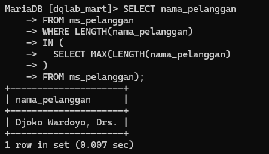
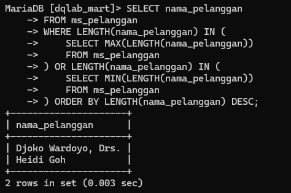

Data Engineer Challenge
Dataset yang digunakan merupakan data dari DQLab Mart. Terdapat 4 tabel di dalam database tersebut.
Table Description
Tabel ms_pelanggan berisi tentang identitas pelanggan, dengan detail atribut/kolom sebagai berikut:
no_urut: row pada tabelkode_pelanggan: kode setiap pelanggan yang bertransaksinama_pelanggan: nama dari pelanggan yang bertransaksialamat: tempat pelanggan tinggal
Tabel ms_products berisi tentang detail pada produk, dengan detail atribut/kolom sebagai berikut:
no_urut: row pada tabelkode_produk: kode yang tertera pada produknama_produk: nama produk yang diperjualbelikanharga: harga pada produk yang diperjualbelikan
Tabel tr_penjualan berisi tentang transaksi penjualan, dengan detail atribut/kolom sebagai berikut:
kode_transaksi: kode transaksi yang dilakukan oleh pelanggan/customerkode_pelanggan: kode setiap pelanggan yang bertransaksitanggal_transaksi: waktu dimana transaksi dilakukan
Tabel tr_penjualan_detail berisi tentang transaksi penjualan secara detail, dengan detail atribut sebagai berikut:
kode_transaksi: kode transaksi yang dilakukan oleh pelanggan/customerkode_produk: kode yang tertera pada produkqty: jumlah kuantitas produk yang tersediaharga_satuan: harga per produk/kuantitas
Query
1. Produk DQLab Mart
Mengacu pada table ms_produk, tampilkan daftar produk yang memiliki harga antara 50.000 and 150.000. Nama kolom yang harus ditampilkan: no_urut, kode_produk, nama_produk, dan harga.
Query:
-- Query 1 SELECT no_urut, kode_produk, nama_produk, harga FROM ms_produk WHERE harga BETWEEN 50000 and 150000;
-- Query 2 SELECT * FROM ms_produk WHERE harga BETWEEN 50000 AND 150000;
-- Query 3 SELECT * FROM ms_produk WHERE harga > 50000 and harga < 150000;
Output:
Explanation: Query tersebut menampilkan daftar produk dengan range harga 50.000 - 150.000.
Dalam range tersebut "Flashdisk DQLab 64 GB" harga terendah,
dan "Gift Voucher DQLab 100rb" harga tertinggi.
2. Thumb drive di DQLab Mart
Tampilkan semua produk yang mengandung kata Flashdisk. Nama kolom yang harus ditampilkan: no_urut, kode_produk, nama_produk, dan harga.
Query:
-- Query 1 SELECT no_urut, kode_produk, nama_produk, harga FROM ms_produk WHERE nama_produk LIKE '%Flashdisk%';
-- Query 2 SELECT * FROM ms_produk WHERE nama_produk LIKE '%Flashdisk%';
Output:
Explanation: Query tersebut menampilkan daftar produk Flashdisk.
Terdapat 2 produk Flashdisk pada DQLab Mart yaitu "Flashdisk DQLab 64 GB"
dan "Flashdisk DQLab 32 GB".
3. Pelanggan Bergelar
Tampilkan hanya nama-nama pelanggan yang hanya memiliki gelar-gelar berikut: S.H, Ir. dan Drs. Nama kolom yang harus ditampilkan: no_urut, kode_pelanggan, nama_pelanggan, dan alamat.
Query:
SELECT no_urut, kode_pelanggan, nama_pelanggan, alamat
FROM ms_pelanggan
WHERE
nama_pelanggan LIKE "%S.H." OR
nama_pelanggan LIKE "Ir.%" OR
nama_pelanggan LIKE "%Drs.";
Output:
Explanation: Query tersebut menampilkan daftar pelanggan yang memiliki gelar. Sehingga dapat dilihat, hanya ada 3 pelanggan yang memiliki gelar.
4. Mengurutkan Nama Pelanggan
Tampilkan nama-nama pelanggan dan urutkan hasilnya berdasarkan kolom nama_pelanggan dari yang terkecil ke yang terbesar (A ke Z). Nama kolom yang harus ditampilkan: nama_pelanggan.
Query:
SELECT nama_pelanggan FROM ms_pelanggan ORDER BY nama_pelanggan ASC;
Output:
Explanation: Query tersebut menampilkan daftar nama pelanggan berdasarkan nama (A - Z).
5. Mengurutkan Nama Pelanggan Tanpa Gelar
Tampilkan nama-nama pelanggan dan urutkan hasilnya berdasarkan kolom nama_pelanggan dari yang terkecil ke yang terbesar (A ke Z), namun gelar tidak boleh menjadi bagian dari urutan. Contoh: Ir. Agus Nugraha harus berada di atas Heidi Goh. Nama kolom yang harus ditampilkan: nama_pelanggan.
Query:
-- Query 1 SELECT nama_pelanggan FROM ms_pelanggan ORDER BY CASE WHEN LEFT(nama_pelanggan, 3) = 'Ir.' THEN SUBSTRING(nama_pelanggan, 5, 100) ELSE nama_pelanggan END ASC;
-- Query 2 SELECT nama_pelanggan FROM ms_pelanggan ORDER BY CASE WHEN LEFT (nama_pelanggan, 3) = 'Ir.' THEN SUBSTRING(nama_pelanggan, 5) ELSE nama_pelanggan END ASC;
Output:

Explanation: Query tersebut menampilkan daftar nama pelanggan berdasarkan nama (A - Z) tanpa gelar.
Dari hasil tersebut, walaupun nama pelanggan "Irwan Setianto"
dan "Ir. Ita Nugraha" sama-sama diawali "Ir", tetapi karena gelar diabaikan,
pelangga bernama "Ita Nugraha" muncul setelah "Irwan Setianto"
sesuai urutan abjad.
6. Nama Pelanggan yang Paling Panjang
Tampilkan nama pelanggan yang memiliki nama paling panjang. Jika ada lebih dari 1 orang yang memiliki panjang nama yang sama, tampilkan semuanya. Nama kolom yang harus ditampilkan: nama_pelanggan.
Query:
SELECT nama_pelanggan
FROM ms_pelanggan
WHERE LENGTH(nama_pelanggan)
IN (
SELECT MAX(LENGTH(nama_pelanggan)
)
FROM ms_pelanggan);
Output:
Explanation: Query tersebut menampilkan nama pelanggan yang memiliki nama paling panjang.
Dapat dilihat, pelanggan yang memiliki nama paling panjang adalah "Djoko Wardoyo, Drs.".
7. Nama Pelanggan yang Paling Panjang
Tampilkan nama orang yang memiliki nama paling panjang (pada row atas), dan nama orang paling pendek (pada row setelahnya). Gelar menjadi bagian dari nama. Jika ada lebih dari satu nama yang paling panjang atau paling pendek, harus ditampilkan semuanya. Nama kolom yang harus ditampilkan: nama_pelanggan.
Query:
-- Query 1
SELECT * FROM (
SELECT nama_pelanggan
FROM ms_pelanggan
ORDER BY length(nama_pelanggan) desc,
nama_pelanggan limit 1
) as a
UNION
SELECT * FROM (
SELECT nama_pelanggan
FROM ms_pelanggan
ORDER BY length(nama_pelanggan),
nama_pelanggan limit 1
) as b;
-- Query 2
SELECT nama_pelanggan
FROM ms_pelanggan
WHERE LENGTH(nama_pelanggan) IN (
SELECT MAX(LENGTH(nama_pelanggan))
FROM ms_pelanggan
) OR LENGTH(nama_pelanggan) IN (
SELECT MIN(LENGTH(nama_pelanggan))
FROM ms_pelanggan
) ORDER BY LENGTH(nama_pelanggan) DESC;
Output:
Explanation: Hasil yang ditampilkan pelanggan yang memiliki nama paling panjang yaitu "Djoko Wardoyo, Drs.".
Sedangkan pelanggan yang memiliki nama paling pendek "Heidi Goh".
8. Kuantitas Produk yang Banyak Terjual
Tampilkan produk yang paling banyak terjual dari segi kuantitas. Jika ada lebih dari 1 produk dengan nilai yang sama, tampilkan semua produk tersebut. Nama kolom yang harus ditampilkan: kode_produk, nama_produk, total_qty.
Query:
SELECT
tr_penjualan_detail.kode_produk,
ms_produk.nama_produk,
sum(qty) AS total_qty
FROM tr_penjualan_detail
INNER JOIN ms_produk ON tr_penjualan_detail.kode_produk = ms_produk.kode_produk
GROUP BY kode_produk, nama_produk
ORDER BY total_qty DESC LIMIT 2;
Output:
Explanation: Dari hasil tersebut, terdapat 2 produk yang paling banyak terjual yaitu
"Flashdisk DQLab 32 GB" dan "Gantungan Kunci DQLab "
masing-masing dengan kuantitas sebanyak 7 item.
9. Pelanggan Paling Tinggi Nilai Belanjanya
Siapa saja pelanggan yang paling banyak menghabiskan uangnya untuk belanja? Jika ada lebih dari 1 pelanggan dengan nilai yang sama, tampilkan semua pelanggan tersebut. Nama kolom yang harus ditampilkan: kode_pelanggan, nama_pelanggan, total_harga
Query:
SELECT
a.kode_pelanggan,
a.nama_pelanggan,
sum(c.harga_satuan*c.qty) as total_harga
FROM
ms_pelanggan a
JOIN tr_penjualan b ON a.kode_pelanggan=b.kode_pelanggan
JOIN tr_penjualan_detail c ON b.kode_transaksi=c.kode_transaksi
GROUP BY
a.kode_pelanggan,
a.nama_pelanggan
ORDER BY total_harga DESC LIMIT 1;
Output:
Explanation: Dari hasil tersebut pelanggan yang paling banyak menghabiskan uangnya untuk belanja?
yaitu "Agus Cahyono" dengan total harga 700.000.
10. Pelanggan yang Belum Pernah Berbelanja
Tampilkan daftar pelanggan yang belum pernah melakukan transaksi. Nama kolom yang harus ditampilkan: kode_pelanggan, nama_pelanggan, alamat.
Query:
-- Query 1
SELECT
a.kode_pelanggan,
a.nama_pelanggan,
a.alamat
FROM
ms_pelanggan a
WHERE a.kode_pelanggan NOT IN (
SELECT kode_pelanggan
FROM tr_penjualan;
);
-- Query 2
SELECT kode_pelanggan, nama_pelanggan, alamat
FROM ms_pelanggan
WHERE kode_pelanggan
NOT IN (
SELECT kode_pelanggan
FROM tr_penjualan
)
GROUP BY kode_pelanggan, nama_pelanggan, alamat;
Output:
Explanation: Dari hasil tersebut, menunjukkan terdapat 5 pelanggan yang belum pernah berbelanja.
11. Transaksi Belanja dengan Daftar Belanja lebih dari 1 Produk
Tampilkan transaksi-transaksi yang memiliki jumlah item produk lebih dari 1 jenis produk. Dengan lain kalimat, tampilkan transaksi-transaksi yang memiliki jumlah baris data pada table tr_penjualan_detail lebih dari satu. Nama kolom yang harus ditampilkan: kode_transaksi, kode_pelanggan, nama_pelanggan, tanggal_transaksi, jumlah_detail.
Query:
SELECT
a.kode_transaksi,
b.kode_pelanggan,
b.nama_pelanggan,
a.tanggal_transaksi,
COUNT(c.kode_produk) AS jumlah_detail
FROM tr_penjualan a
INNER JOIN ms_pelanggan b ON a.kode_pelanggan = b.kode_pelanggan
INNER JOIN tr_penjualan_detail c ON a.kode_transaksi = c.kode_transaksi
GROUP BY a.kode_transaksi, b.kode_pelanggan, b.nama_pelanggan, a.tanggal_transaksi
HAVING jumlah_detail > 1;
Output:
Explanation: Dari hasil tersebut, terdapat 5 transaksi yang dengan jumlah produk lebih dari satu jenis produk.
Jumlah transaksi produk terbanyak yaitu 8 oleh pelanggan bernama "Agus Cahyono".